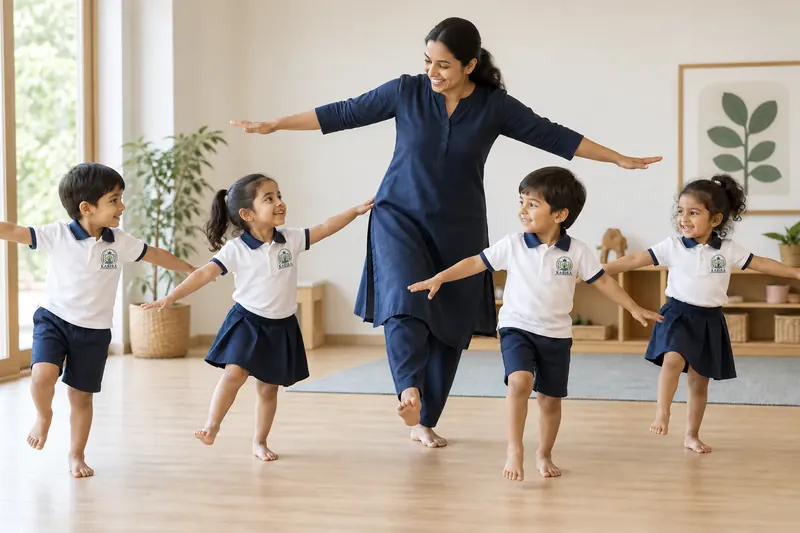
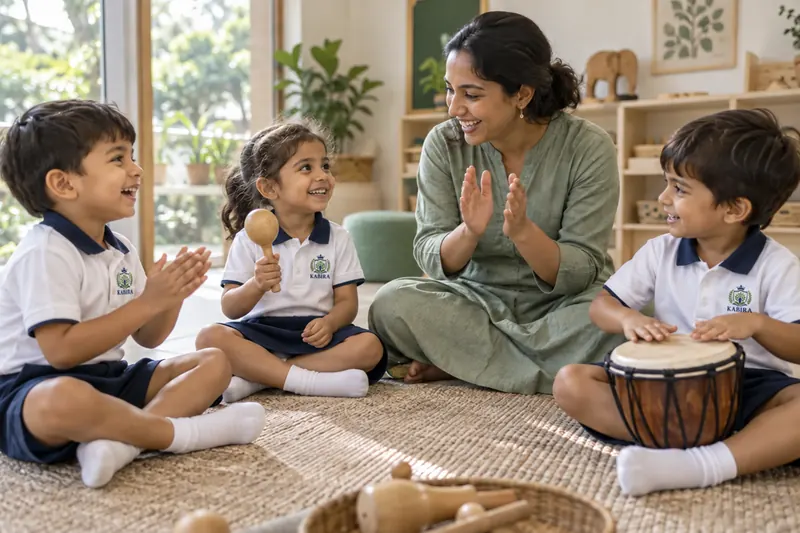
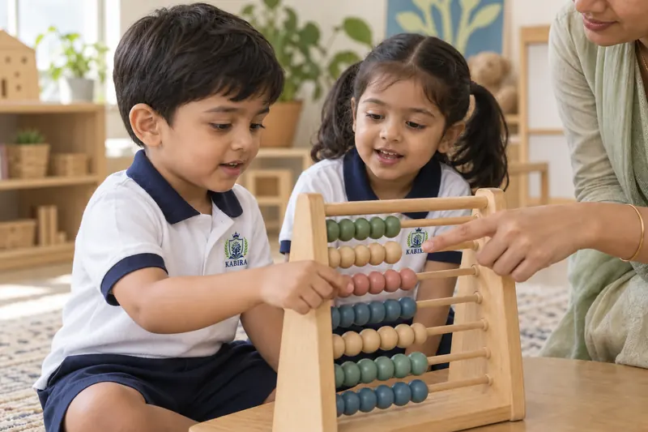
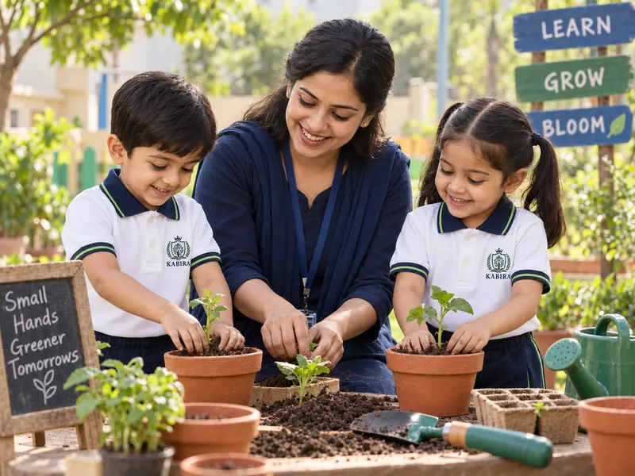

Moving with confidence.
Regular dance sessions build coordination, rhythm and body awareness, and give children a joyful, expressive way to take part — no performance pressure, just movement and enjoyment.
 KABIRATHE INTERNATIONAL SCHOOLAdmissions
KABIRATHE INTERNATIONAL SCHOOLAdmissionsBEYOND THE CLASSROOM
Learning doesn't only happen at a desk. Alongside daily classroom instruction, Kabira builds in regular dance, music and abacus sessions, plus a weekly special activity — so children encounter something beyond routine instruction every week, not as an occasional treat.
THE EXPERIENCES

Regular dance sessions build coordination, rhythm and body awareness, and give children a joyful, expressive way to take part — no performance pressure, just movement and enjoyment.

Music sessions build listening, memory and language through rhythm and group singing, while giving every child a chance to participate and be heard.

Age-appropriate abacus sessions build familiarity with numbers, attention and pattern recognition — a comfortable, confident relationship with numbers, not a race to calculate faster.

Beyond the regular timetable, each week brings a planned activity outside routine instruction — creative, practical or celebratory — so school stays full of small, genuine discoveries.
PART OF EVERY WEEK
Dance, music and abacus are built into the timetable week after week — not as occasions, but as recurring experiences children can look forward to, prepare for and feel confident in. A weekly special activity makes each week feel just a little different from the last.
See how learning grows at each stageWHY IT'S PART OF THE WEEK, NOT AN EXTRA
Children take in the world through movement, sound, pattern and play as much as through a lesson. Building dance, music and abacus into the regular week — alongside a weekly special activity — means those ways of learning aren't occasional add-ons, but a normal part of how a week at Kabira feels.
SEE HOW IT FITS TOGETHER